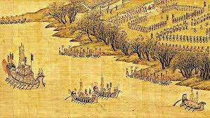
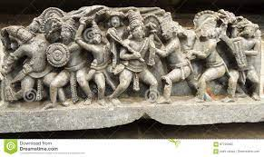

Bangalore until in 1537 CE, Kempé Gowdā – a feudal ruler under the Vijayanagara Empire – established a mud fort considered
to be the foundation of modern Bangalore.A succession of South Indian dynasties, the Western Gangas, the Cholas and the
Hoysalas, ruled the present region of Bangalore until in 1537 CE, Kempé Gowdā – a feudal ruler under the Vijayanagara Empire
– established a mud fort considered to be the foundation of modern Bangalore.
1. Wester Gangas

The Western GangasThe general belief is that the Western Gangas began their rule By 430 they had consolidated their eastern territoriescomprising modern Bangalore,.he origin of the Ganga clan prior to the fourth century is shrouded in legends and myths.
Clarity into their history comes from such contemporaneous writings as Chavundaraya Purana in Kannada and Lokhavibhaga
in Prakrit and from numerous inscriptions excavated in the Mysore,Bangalore and Kolar districts(southern region of modern
Karnataka)their Hindu temples in the southern Karnataka, and their Jain Basadi's of Shravanabelagola and Kambadahalli are
testimony to the rich contribution they made to the region.
2.Cholas

Cholas
The Chola dynasty was one of the longest-ruling dynasties in the history of southern India. In Bangalore the Cholas ruled nearly a century. The heartland of the Cholas was the fertile valley of the Kaveri River, but they ruled a significantly The
The Chola dynasty was one of the longest-ruling dynasties in the history of southern India. In Bangalore the Cholas ruled nearly
a century. The heartland of the Cholas was the fertile valley of the Kaveri River, but they ruled a significantly larger area at
the height of their power, including the present-day Bangalore. During the reign of Rajaraja Chola I—around 1004 AD—the cholas
captured Bangalore after defeating the Gangas. During their rule, they built many temples in and around Bangalore with the
Chokkanathaswamy temple, Mukthi Natheshwara Temple, Choleswara temple and the Someshwara Temple being prominent ones.
The Chokkanathaswamy temple at Domlur, whose earliest inscriptions date back to the 10th century AD,is the oldest temple
in the city. Originally built by Raja Raja Chola I, the temple was later renovated by the Hoysalas and Vijayanagara rulers.
The temple's deity was Lord Shiva, but later a Vishnu temple was built for the local residents who were mainly Vaishnavas.Chola
dynasty was one of the longest-ruling dynasties in the history of southern India. In Bangalore the Cholas ruled nearly a century.
3.Hoysalas

HoysalasThe Hoysala Empire was a Kannadiga power originating from the Indian subcontinent that ruled most of what is now Karnataka between the 10th and the 14th centuries.The capital of the Hoysalas was initially located at Belur, but was later
moved to Halebidu.Hoysala literature is the large body of literature in the Kannada and Sanskrit languages produced by the
Hoysala Empire 1025–1343 in what is now southern India.The Hoysala rulers also patronised the fine arts, encouraging
literature to flourish in Kannada and Sanskrit.Although Sanskrit literature remained popular during the Hoysala rule,
royal patronage of local Kannada scholars increased.According to historian Sheldon Pollock, the Hoysala era saw the
complete displacement of Sanskrit, with Kannadadominating as the courtly language.
4.King KempeGowda

King KempegowdaNadaprabhu Hiriya Kempegowda, also known as Kempegowda, was a chieftain under the Vijayanagara Empire.He is also known as the founder of Bengaluru in the 16th century. A descendant of Morasu Gowda lineage, Kempegowda is considered
one of the most educated and successful rulers of his time.Kempe Gowda was born in the Yelahanka suburb of Bangalore in the Morasu
Vokkaliga community to Kempananje Gowda, the ruler of Yelhanka for more than 70 years. The Morasu Vokkaligas were Vijayanagara
vassals at Yelahanka and belonged to the Vokkaliga community. They were originally from Karnataka and were a Kannada-speaking community,
Kempe Gowda died in 1569 having ruled for about 46 years. The 16th century Kannada epitaph on his tomb proclaims that he died on the
spot at Kempapura, a village in Magadi, while returning from Kunigal, reportedly after settling a dispute.